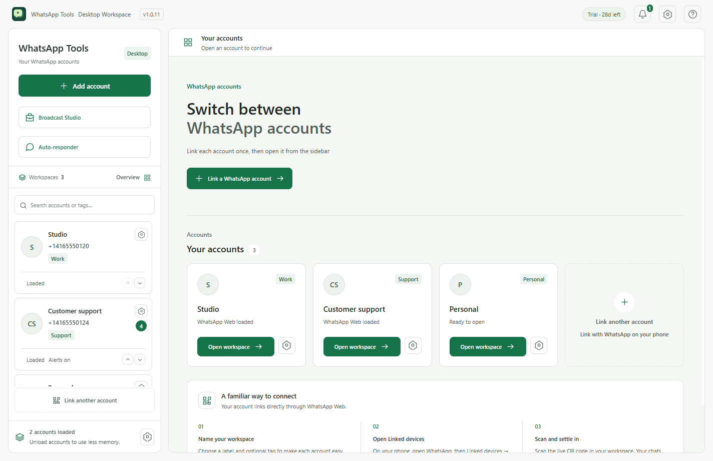
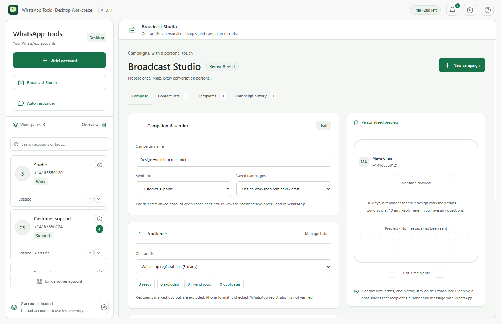

One app. Your different worlds.
Link multiple accounts through WhatsApp Web. Move between workspaces without signing out of one to open another.
Work chats. Personal plans. A growing business.
Give each account its own space, in one familiar desktop app.

Your conversations already have a home.
Now your accounts do, too.
Link multiple accounts through WhatsApp Web. Move between workspaces without signing out of one to open another.
Give accounts a name and tag. Find them with search, arrange them your way, and choose which ones can send desktop alerts.
Switch accounts from the system tray. Unload pages you aren’t using, or let optional memory cleanup handle inactive accounts.
Build keyword rules, working-hour schedules, and reusable replies. Paste a received message, generate a draft, and review it before opening the chat to send yourself.
A thoughtful message starts before you hit Send. Build contact lists, reuse your best drafts, and preview the right message for each person.
Manual review & send. The app doesn’t send messages automatically or claim delivery confirmation.

When Premium becomes available, purchase the edition for your platform. Store purchases and direct-download activation are handled separately.
Choose Add account. On your phone, open WhatsApp → Linked devices → Link a device. Scan the live QR code.
Add more accounts, choose labels and tags, and explore Broadcast Studio whenever you’re ready.
One purchase unlocks every feature. The Mac App Store edition is planned at US$9.99; Store release is pending. Direct-download Premium for India is ₹500 for all features and is available for Windows x64, Apple Silicon Macs, and Linux x64.
Premium availabilityNew in 1.0.6. Open Notifications to see unread alerts and recent notification history for your accounts. The app keeps up to 100 alerts in encrypted local storage, and you can clear the history at any time.
Mac App Store: release pending. Mac direct download: Apple Silicon (M1 or newer) only. Download, open, then purchase and activate in the app. A real purchase has unlocked the Windows app. Physical Mac testing, refunds and offline renewal remain unverified. Windows x64 is available as an unsigned installer: expect SmartScreen or Unknown publisher warnings.
No. WhatsApp Tools is an independent desktop client that opens WhatsApp Web in separate account workspaces. It is not affiliated with WhatsApp or Meta.
Account labels, contact lists, templates, and campaign history are stored in your local app profile. WhatsApp Web maintains its own browser data and communicates with WhatsApp. Opening a prepared chat shares its recipient number and message with WhatsApp.
No. It prepares a personalized message and opens the chat in the account you choose. You review and send in WhatsApp yourself. “Marked sent” is your own record, not a delivery or read receipt.
The signed and notarized Mac direct download supports Apple Silicon (M1 or newer). The Mac App Store release is pending. Windows x64 is available as an unsigned direct installer and may trigger Windows security warnings. Linux x64 is available as an AppImage or Debian package. The Mac download requires Apple Silicon. Older free preview downloads have been withdrawn.
No. You paste the received message and choose when to generate a reply. Rules, schedules, and saved templates help prepare the draft; you review and send it in WhatsApp yourself. Tests are local simulations, and marked-sent records are self-reported.
Version 1.0.3 allows notifications, camera and microphone for WhatsApp Web by default. You can turn each off in account settings. Windows/macOS may still require approval, and alerts and calling availability depend on WhatsApp, hardware and system settings. Screen sharing is not enabled.
Return to the app after checkout. Version 1.0.2 checks direct purchases automatically. You can also choose Check purchase status. You do not need a manual activation key for an in-app purchase. If payment succeeded, do not pay again.
Use the update method for your purchased edition. Keep a backup of your local app profile before moving installations. To revoke access, use Linked devices in WhatsApp on your phone.